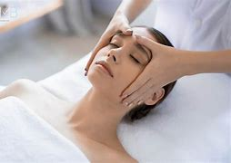

¡Bienvenidos! Mi nombre es Luciana Acevedo, y soy una apasionada terapeuta de masajes dedicada a brindar bienestar y alivio a través del poder del tacto y la conexión con el cuerpo y la mente. Desde temprana edad, descubrí mi fascinación por el arte del masaje y cómo puede transformar la salud y la calidad de vida de las personas. Con el tiempo, mi curiosidad y deseo de ayudar a otros me llevaron a formarme y especializarme en diversas técnicas terapéuticas.
Mi objetivo es proporcionar una experiencia única y personalizada para cada cliente que visita mi consulta. Cada masaje que ofrezco es cuidadosamente adaptado a las necesidades individuales, permitiendo que se liberen las tensiones acumuladas, se alivien molestias físicas y emocionales, y se logre un estado de relajación profunda. En cada sesión, creo un ambiente sereno y acogedor, donde cada persona puede sentirse cómoda y segura para liberar tensiones y preocupaciones. Mi objetivo es que cada cliente se sienta revitalizado, con una sensación de renovación y vitalidad que perdura más allá del masaje.
Es un honor para mí formar parte del camino hacia el bienestar y la relajación de quienes confían en mí para cuidar de ellos. Mi misión es seguir creciendo como profesional y expandiendo mis conocimientos en el mundo del masaje terapéutico, para poder seguir entregando los mayores beneficios a cada persona que busca sanar y rejuvenecer a través del tacto terapéutico. Gracias por visitar mi página y considerar mis servicios. Espero tener la oportunidad de conocerte y acompañarte en este viaje hacia una vida más saludable y armoniosa.
Lo que me impulsa cada día a dedicarme apasionadamente a mi labor como terapeuta de masajes es el poder transformador que veo en cada cliente. La satisfacción de ver cómo alguien llega a mi consulta con cargas emocionales y físicas, y cómo se va sintiendo más ligero y relajado tras cada sesión, es verdaderamente gratificante. La conexión humana es otra de mis mayores motivaciones. Cada persona que entra en mi consulta es única, con sus propias experiencias y necesidades. Me inspira poder escuchar sus historias, comprender sus desafíos y ofrecerles un espacio donde puedan sentirse comprendidos y cuidados.
El conocimiento en constante evolución también es un motor fundamental en mi trayectoria profesional. Me apasiona estar al tanto de las últimas técnicas y enfoques en el campo del masaje terapéutico. Esta búsqueda continua de conocimiento me permite ofrecer a mis clientes las mejores prácticas y las soluciones más efectivas para su bienestar.
Asimismo, la posibilidad de contribuir al bienestar general y la calidad de vida de mis clientes es algo que me motiva cada día. Saber que puedo ser una pieza clave en su camino hacia una mejor salud y equilibrio es un honor que me inspira a dar lo mejor de mí en cada sesión. En resumen, mi mayor motivación es el deseo genuino de marcar una diferencia positiva en la vida de las personas que confían en mí para su bienestar. Cada experiencia compartida, cada sonrisa de satisfacción, y cada progreso alcanzado son razones poderosas que me animan a seguir creciendo y brindando lo mejor de mí en esta hermosa y gratificante profesión.
